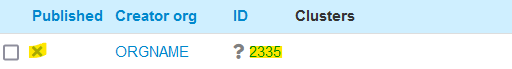
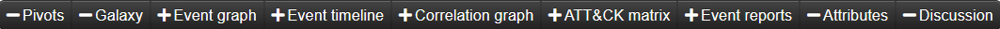
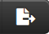
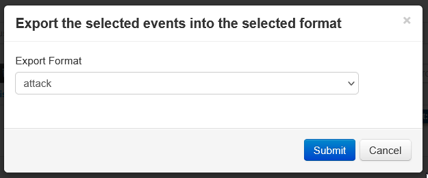
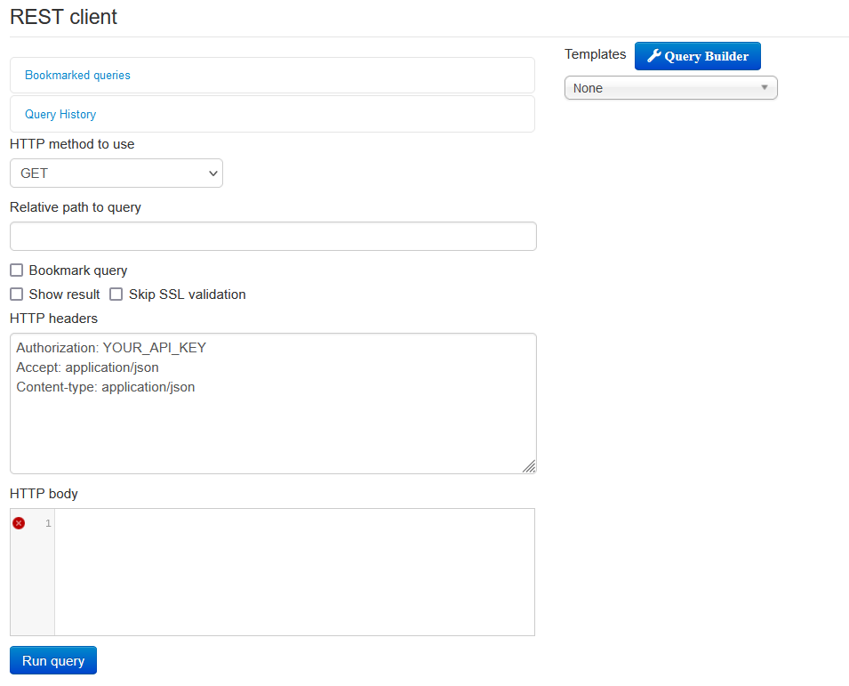

Was ist MISP?
MISP ist eine Open-Source-Plattform zum Sammeln, Speichern, Verteilen und Sharing von Cybersicherheitsindikatoren und Cyberattacken. MISP wurde von und für Cybersecurityspezialisten entwickelt, um deren tägliche Arbeit zu unterstützen und strukturierte Informationen effizient zu teilen.
Communities
Communities sind Zusammenschlüsse mehrerer verbundener Organisationen, die Events miteinander teilen. Bei den meisten MISP-Communities muss man zuerst Zugriff beantragen, um mit seiner Organisation beizutreten. Sobald man Mitglied ist, kann man sämtliche Events der Community sehen und seine eigenen Events mit dieser teilen.
Feeds
Feeds sind eine Ansammlung von Events(Oft eine Liste an Indicators, die von anderen Organisationen zur Verfügung gestellt werden. Im Gegensatz zu Communities, muss man bei Feeds keinen Zugriff beantragen, um sie mit der eigenen MISP-Instanz zu synchronisieren. Nachdem man einen Feed hinzugefügt hat, werden sie regelmäßig automatisch aktualisiert.
Indicators Of Compromise (IOCs)
Ein Indicator of Compromise ist ein Anzeichen, dass ein System kompromittiert ist. Das könnte z.B. eine verdächtigte IP-Adresse oder Domain sein, die bei einer Netzanalyse gefunden wird. Auch Dateinamen, Hashwerte, etc. zählen dazu.
Events
Ein Event ist nichts anderes als ein Eintrag im MISP-System. Üblicherweise beschreibt es einen Vorfall (Malware) und alles Wissenswerte wird innerhalb des Events, meistens in Form von Attributen gesammelt. Oft werden Events jedoch auch als Auflistung von unabhängigen IOCs verwendet.
Anmeldung
Das MISP System läuft lokal im Firmennetz der Axians. Die Weboberfläche ist über die Adresse http://10.43.52.27 erreichbar.
Beachte: Du musst mit der VPN verbunden sein, um die Website zu erreichen.
Zugangsdaten
Dein MISP Konto muss von einem Administrator manuell erstellt werden. Üblicherweise sind deine Zugangsdaten deine @axians.at E-Mail-Adresse, sowie "Axians2022Axians!" als Default-Passwort.
Nachdem du dich erfolgreich angemeldet hast, wirst du automatisch zur Liste aller Events weitergeleitet.
List Events
Die "List Events" Ansicht zeigt alle Events, die in MISP gespeichert sind. Diese können entweder aus beigetretenen Feeds, Communities oder den lokalen Organisationen kommen.
Wähle mit dem Kästchen eines oder mehrere Events aus, um sie zu löschen oder zu exportieren .
Du kannst ein Event anzeigen lassen indem du entweder auf Published
oder
ID klickst.

View Event
Im Event View werden alle Informationen aus der Listenansicht, mit ein paar weiteren Feldern,
nochmal
ausführlich aufgelistet. Weitaus interessanter ist hier aber die
Leiste unten

mit der man weitere Grafiken einblenden kann, die mir
viel mehr über ein Event (z.B. Funktionsweise, Zeitlinie, Vorfälle) sagen können.
Beachte: Wie aussagekräftig diese Darstellungen sind, ist von Event zu Event und je nach Anwendungsfall unterschiedlich.
Galaxies/Cluster
Galaxies sind eine Art von Kategorisierung, um Events grob zu
beschreiben. Man kann es damit vergleichen, Stichworte zu bestimmten Bereichen (Clustern)
zuzuordnen.
Attributes
Attribute beinhalten die meisten und oft auch wichtigsten Daten zu einem Event. Hier werden so ziemlich alle restlichen Stücke an Information kollektiv gesammelt, darunter auch alle bekannten Indicators of Compromise. Mögliche Kategorien sind u.a.:
-
Network activity
Informationen über generierten Netzwerktraffic. Kann z.B. eine IP-Adresse, eine Domain, eine E-Mail-Adresse, usw. sein
-
Payload delivery
Information, wie eine Malware ihren Payload überliefert. Kann z.B. ein Dateiname oder ein Hashwert sein
-
Payload installation
Informationen, wo eine Malware auf einem System installiert wird.
-
External analysis
Meistens Links auf externe Quellen, die das Event betreffen. Oft Blog-Einträge oder News-Artikel um sich weiter in die Thematik einzulesen.

Taxonomies/Tags
Taxonomies dienen zur Kategorisierung mit einem optionalen Wert. Man kann sie als Tag an ein Attribut oder Event hängen und können dazu dienen, mehrere Events indirekt miteinander zu verknüpfen. Tags alleine hingegen bestehen nur aus einem Namen.
Unten: Tags
Event hinzufügen
Sollte ein Vorfall, der bis jetzt noch nicht in MISP eingetragen wurde, in deiner Organisation aufgetreten sein kannst du ein eigenes Event erstellen, um deine Ergebnisse festzuhalten.
Klicke dafür in der Navigation unter "Event Actions" auf Add Event
Danach kannst du sämtliche Eckdaten zu deinem Event angeben. Hier ein paar
Erläuterungen:
Nachdem du das Event erstellt hast, kannst du es dir anzeigen lassen und im Nachhinein
weitere Daten wie Attribute, Tags und Galaxies hinzufügen.
Suchfunktion
In MISP gibt es grundsätzlich zwei Möglichkeiten, alle Events zu durchsuchen:
Generelle Suche
Eine generelle Suche, die alle Felder eines Events abdeckt. Du findest sie in der List Event Ansicht und kannst im Dropdown neben der Suchleiste festlegen, was genau durchsucht werden soll. Als Ergebnis bekommst du eine Liste von Events, auf die die Suche zutrifft.
Attribut-Suche
Und eine Suche, die nur nach Attributen sucht. Man kann nach Datum, bestimmten Events, Tags und vielem mehr Filtern. Du findest sie unter "Event Actions" bei Search Attributes Als Ergebnis bekommst du eine Liste an zutreffenden Attributen, ggf. aus verschiedenen Events.
Folgendes ist bei der Textsuche zu beachten:"For the value, event ID and organisation, you can enter several search terms by entering each term as a new line. To exclude things from a result, use the NOT operator (!) in front of the term. For string searches (such as searching for an expression, tags, etc) - lookups are simple string matches. If you want a substring match encapsulate the lookup string between "%" characters."
Export
MISP bietet verschiedene Möglichkeiten an, Daten und insbesondere Events zu exportieren.
Aus der Eventliste
Wie oben bereits erwähnt, kann man in der List Event Ansicht ausgewählte Events einfach  exportieren.
Anschließend kannst du aus zahlreichen Formaten auswählen, darunter JSON, XML, CSV, SNORT, YARA, STIX, TXT, ...
Aus einem Event
In der Eventansicht kannst du ein einzelnes Event exportieren. Wähle dafür unter "Event Actions" oder in der Sidebar Download as...
Hier kannst du wie bei mehreren Events aus den wichtigsten Formaten (JSON, XML, CSV, SNORT, YARA, STIX, TXT, ...) auswählen und zusätzlich noch anpassen, ob z.B. Dateianhänge mitgeliefert werden sollen.

(Deprecated) Alles Exportieren
Unter "Event Actions" → Export kann man derzeit noch alle Events in ein gegebenes Format exportieren. Dateianhänge zu codieren ist hier nicht möglich.
Beachte: Die exportierten Dateien müssen vorerst generiert werden, bevor man sie herunterladen kann. Das kann je nach Größe der Daten einige Minuten dauern.
Dieses Feature ist derzeit deprecated und wird in einer späteren Version nicht mehr verfügbar sein.
Über den REST Client
Jede MISP-Instanz stellt eine API Schnittstelle inklusive eines REST Clients auf dem Webinterface zur Verfügung, mit der man u.a. auch Daten exportieren kann. Es wird empfohlen, in Zukunft den REST Client anstelle des Export Features zu verwenden.
Die Dokumentation findest du hier
API
Mit der API kannst du auf alle vorhandenen Daten deiner MISP-Instanz zugreifen und diese auch ändern.
Die API ist eine RESTful Schnittstelle. Die Schnittstelle ist OpenAPI spezifisch.
Neben Libraries wie PyMISP hat die Community hinter MISP auch zahlreiche Module und Tools entwickelt, die auf dieser API basieren. Eine Liste von bekannten Tools findest du hier.
Auth Key
Um die API benutzen zu können, brauchst du einen Auth Key.
Diesen kannst du unter "Global Actions" → My Profile → Auth keys erstellen lassen.
User Guide
Solltest du noch mehr über die Funktionalität von MISP erfahren wollen, kannst du im offiziellen User Guide nachschlagen. Dieser befindet sich hier.